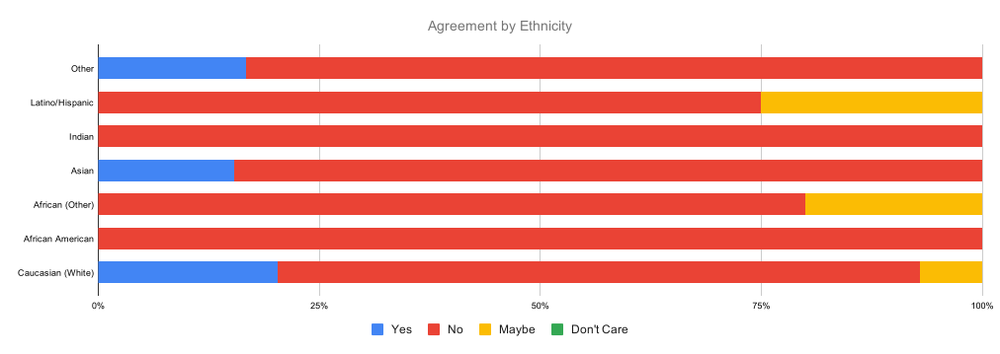

A survey conducted by u/PM_ME__UR_CANCER

BLM Survey
Introduction
Hello!
These are the results of a survey I posted recently, which aimed to ask the Github userbase what their
thoughts on the controversial change of the default branch on Github (and by extension, Git) from 'master'
to an alternative phrase like 'main' or 'trunk'.
The name change was proposed as a response to the 2020 Black Lives Matter protests, demanding equal rights
and restructure of the American police system in response to the violent, tragic and reckless murders of
innocent black men, women and children at the hands of police.
This proposed change has divided opinions within Github's user base. Github has claimed that the use of the word
'master' has connotations to slavery in many countries, and it is being changed to make black developers feel
more comfortable on the platform. However, many others have argued that the change is meaningless to the cause,
distracts the public from the actual issues faced by real black people, and that the change breaks CI solutions
and other habits. However, many others also support the change, believing that it is expanding inclusivity, and
it is also a chance to change the name of the branch to something more meaningful or a name which expresses the
branch's purpose more clearly.
In the wake of this, I decided to create this survey to ask the users of Github directly what they thought about
the change. I also decided to collect information about the responder's ethnicity, country of residence and gender,
in order to gauge the demographics which were mainly for and against the change.
Demographics
- 210 total responses
- 16 ethnicities
- 16 non-cis responses
The survey spanned many different countries, reaching people who identified with around 16 different ethnic groups. The survey was also taken by several people who did not identify as either male or female. However, the majority of people who responded were white, and the most prevalent gender identity to respond was male, followed up by females. This was expected based on how the majority of people involved in computer science (and therefore, users of Github) are white males. Despite this however, many users chose not to disclose their gender identity, so the true distribution is not known.

Perhaps unsurprisingly, the United States came in with the most responses by 29.5%, followed closely by many European countries. I did not list all countries in Europe, but many responses from other countries in Europe responded, taking up about 29% of all responses. Based on the ethnic data, I'm guessing most of these are from countries like Russia, the Netherlands, Spain, and so on. In hindsight, I probably should have included more countries in the list.
Country Breakdown

General Consensus
The general opinion for most users is that they are against this change. 70% of all participants said
that they are against the change, with only 15.7% being in support of the change. The other 14.3% fall under
'Maybe' and 'Don't care', though their actual opinions are usually mixed and lean towards one of the two main
options. Based on the written responses from users who were asked to explain their responses, most reasoning
for their responses is as follows:
For
- It is outdated terminology, and changing it from 'master' to some other alternative in order to create a more inclusive space is worth the effort.
- It is an opportunity to pick a more meaningful name which better expresses what the branch actually does. It is difficult to understand exactly what 'master' means on first encounter, whereas something like 'main' would make much more sense.
- The name 'master' simply doesn't make sense to some users. It is now legacy terminology, and holding onto it would simply be impractical.
- Some are not bothered either way, but feel that if individuals are offended by it they are supportive of changing it to something else.
Against
- This action is being taken as a form of 'virtue signalling', Github and Microsoft merely did this in order to jump onto a bandwagon while the Black Lives Matter movement was gaining momentum on social media.
- Several African Americans who responded stated that it was more offensive to change it, since it comes across as white people "thinking we are "vulnerable" and need protecting" from a word which they understand has multiple meanings in different contexts.
- It is an impractical change which will break workflows, continuous integration (CI) setups and several other automated scripts which will require manual fixing later.
- Using the word 'master' depends on the context being used. In Git, it is widely understood that the word 'master' is used to mean master copy (the original copy which all derivatives are made from), and nobody associates the word in this context with it's master/slave connotation.
- Several git tutorials and walkthroughs will become obselete.
- It is introducing politics into a website which is not and has not ever been involved in politics, and it is creating a social issue where there actually isn't one to begin with.
It is clear that most users believe it is an unnecessary change, which breaks automated workflows, is insensitive given the current political landscape in the world, offensive to the group of people they are trying to be inclusive of, and suggests that Github and/or Microsoft are simply only interested in doing this to gain favor in public opinion.
However, some users also believe that it is time to rid the industry of questionable terminology, which could possibly offend certain people, is confusing and unclear in its meaning given the context it is used in, and should be swapped out with clearer and less ambiguous terminology.
Those who were in support of the change were asked to pick from a list of alternative names for the branch which they preferred, or suggest their own. The most popular one chosen by participants was 'main' with 47.6% of votes, followed by 'trunk' with 14.3%. Several other names were suggested which are listed below.
Suggested replacements for 'master'

Correlations
I originally ran this survey with the goal of discovering some kind of correlation between the different demographic groups which make up Github's user base, and how positive/negative their support is in relation to this issue. I also wanted to see which group was most supportive of the change, which group was least supportive, and how much the response changed between ethnicities, genders and countries.

Something I was not expecting when gathering the data for this survey is that every single African American who
answered the survey responded 'No' in support of the change. Not only that, when asked to explain their reasoning,
all of them sounded fairly spiteful towards Github and it's executives, since they felt that these decisions were
made by white executives who didn't actually consider whether it offended them or not, and these responses suggest
that they were more offended by Github feeling the need to change it in the first place.
You can also see that most of the users in support of this change are of either caucasian or asian descent, while
more marginalised groups like africans, indians, hispanics and otherwise are almost universally against the changes,
reflecting that the main ethnic group which feels the need to change it (and take offense to it) are white.
The above holds true when compared to the correlation between countries, and it becomes clear that countries with a predominantly white population are more supportive of the change, while african and asian countries tend to lean more against the change, with the exception of New Zealand which universally disagrees with the change.
When broken down by gender the correlation between race is obviously less clear. However, we can see that men provided the most mixed results in the survey. Females are the most supportive of the change, with 30% of women voting 'Yes' in response to changing the name. Transgender and non-binary people are universally against the change, while gender-fluid people are universally for the change, although there was not enough data from people who identified with these gender identities to have accurate results (especially with only one person identifying as gender-fluid).
Open letter to Github (and Git)
It's stupid, means nothing, and makes fun of the civil rights movement.
To Github,
On behalf of your users, I ask that you reconsider your approach in forcing the default branch name of all new
repositories on your site to be changed from 'master' to 'main'. While it is a less ambiguous term and might be
clearer to the average user, changing it at this time is seen as an offense to many of your users, including the
specific ethnic group which you are hoping to be more inclusive of.
African Americans across the internet have stated that this change is a spit in the face to them and the entire
Black Lives Matter movement, insinuating that they cannot realize that the word has a different meaning based on
the context it is used in, and that they must be sheltered by you because you know better. It is the main reason I
and so many others have been unsupportive of the change from the start, because despite your intentions, you are
inadvertently allowing casual racism to continue through your actions towards this group which is fighting for their
safety in the real world.
I suggest keeping the ability to change the default branch name if you wish (either through Github settings or the
'init.defaultBranch' config option in Git), but users should not be forced to have their default branch name changed
to 'main', and manually change it back. Rather, I believe that it should be kept as 'master', with the option to
change it manually, since the vast majority of your user base would prefer it to be left the same, both for ease of
use, not breaking automated workflows, and because changing it marginalises the group which you are trying to include,
when that specific group is already facing horrible acts of violence and ignorance in the real world.
I don't believe politics belong in programming, and neither does a primary percentage of your user base. Whatever the
motives behind this decision were, I believe it is going to case more harm than good, and cement a dangerous perspective
that things will be changed not because they actually offend people, but because people believe it will offend another
group of people.
Thank you for your consideration,
- Github Users
Conclusion
Thank you so much for reading the results of this survey, and if you happened to participate in the survey, thank you!
Your responses were very much appreciated and should hopefully help paint a clearer picture into the opinions of Github's
userbase on this issue.
Obviously there were only 210 responses so this data is not entirely accurate, and having more responses would have been
ideal to get a better idea of the overall broad opinion of the site's users, but I am satisfied with the results of this
survey, and I think it still reflects the opinions of the sites users.
If you would like to support the Black Lives Matter movement, please consider visiting these links to find out how to
support the movement. The best way (in the U.S. at least) is to register to vote and vote against racist leaders, write
letters to local politicians, or to sign one of many petitions on the internet.
If you would like to download the dataset for this survey to do your own analysis, feel free!
If you find any more interesting information, think something could be worded better, or even just find a spelling/grammar mistake somewhere, please open up a pull request on this repo and I'll take a look at it! Any help would be greatly appreciated. Or, if you're feeling generous, give it a star!
Thank you to Google Forms and Google Sheets for the creation of the survey form and the graphics which were generated for this page. Thank you to Query CSV with SQL (linked above) for dramatically increasing the speed at which I was able to put this page together. And thank you Github for hosting this page and providing a repository where collaboration on this page can be performed.
Thanks for reading, have a wonderful day/night!
Last updated: 15/9/2020
Star Fork Issue